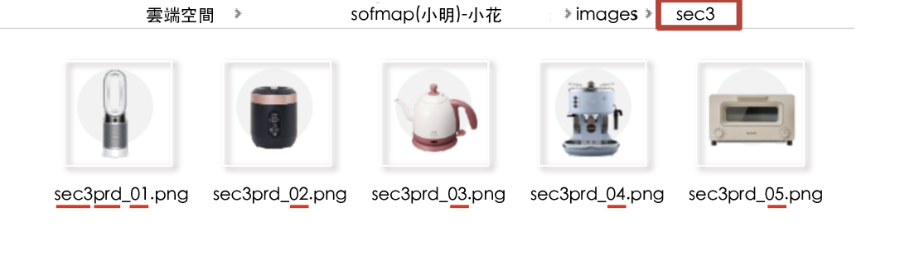
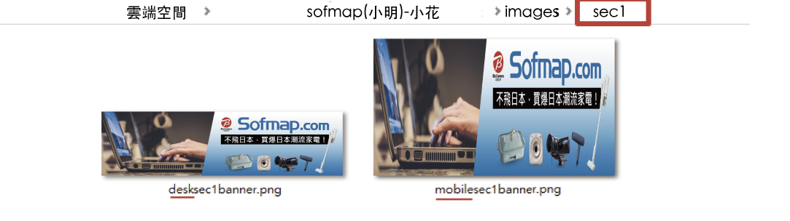

★ 資料命名方式：
● 方式一
找到區塊 => 資料夾以區塊命名section(簡化為sec)
● 範例
★ 圖片命名方式：
● 方式一
進入區塊資料夾 =>
圖片命名方式:"區塊sec"+"有意義的名詞"+"_數量"+"副檔名"
● 範例
● 範例
● 範例

● 方式二
當桌機與手機圖片不同時:
▲
桌機圖片命名方式:"desk"+"區塊sec"+"有意義的名詞"+"_數量"+"副檔名"
▲
手機圖片命名方式:"mobile"+"區塊sec"+"有意義的名詞"+"_數量"+"副檔名"
● 範例

★ 何謂“有意義的名詞”命名：
● 標題-範例
標題=>title 、 副標題=>subtitle
● 按鈕-範例
按鈕 => button
● 圖片-範例
背景圖=>bg 、 插圖=>pic 、 標籤圖=>icon 、 20X20px小圖=>stick
...
● 橫幅-範例
180橫幅=>180bn 、 425橫幅=>425bn
★ 副檔名命名方式：
※注意:需統一包含大小寫
※使用“.gif”及“.png”為主，不使用“.jpeng”!!